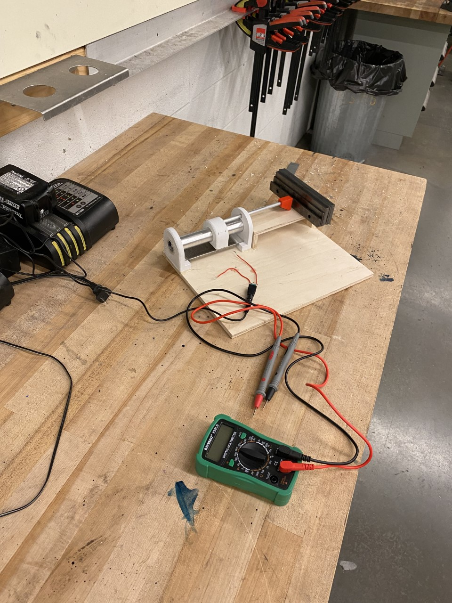

Build a custom linear potentiometer to measure distance, hitting two requirements:
- Measure between 0cm and 10cm
- Tolerance of ±0.5cm
The design is a voltage divider. Nichrome wire wound around an acrylic form acts as a single resistor; a copper wiper splits it into two. The output voltage depends on where along the coil the wiper sits, and that position maps directly to the length being measured.
Using machine-shop gauge blocks as reference distances, I recorded output voltage against known lengths and fit a voltage-vs-distance line as the calibration equation. To quantify tolerance, I ran the recorded voltages back through the equation to get calculated lengths, took the deviation from true length at each point, and used the maximum and minimum deviations as the ± bounds.


Calibration met the ±0.5cm spec, but by presentation the device was off by ±3cm. Root causes:
- Resistive wire shifting along the acrylic path
- Wired connections loosening at the supply and measurement points
- Inconsistent wiper contact point against the resistive coil
- Copper wiper oxidizing between calibration and presentation
Together these shifted the calibration equation, so the calculated lengths drifted away from the true values.
- Build from more dimensionally stable material than 3D-printed parts and wood — e.g. 80/20 aluminum extrusion
- Use a homogeneous, linear resistive element that tolerates contact without inconsistency, such as an epoxy + carbon blended pad
- Contact the resistive element at a single, repeatable point to reduce variability
Components and stages of the build.


Met spec at calibration and drifted under real conditions — a clean lesson in how material choice and contact design drive sensor repeatability.
Download Full Report ↓